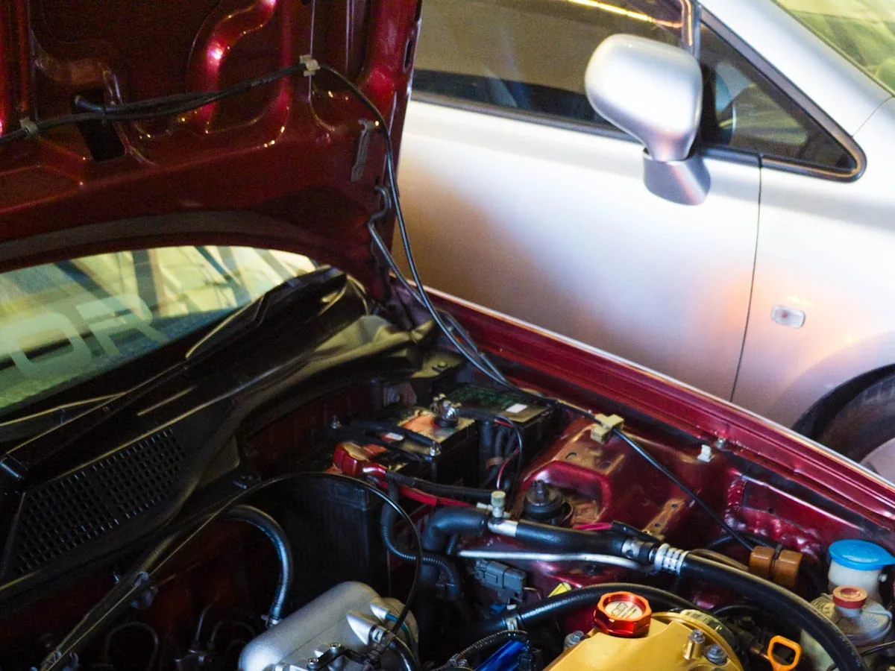

Lavagem de motor em Coronel Fabriciano
Limpeza do cofre do motor com desengraxante, protegendo os componentes elétricos. A gente avalia o motor antes — nem todo motor pode ser lavado.

Como é a lavagem de motor
Antes de lavar, a gente olha as condições do motor. Se estiver tudo certo, o cofre é limpo com desengraxante para tirar óleo, graxa e sujeira acumulada.
- Avaliação do motor antes do serviço
- Proteção dos componentes elétricos sensíveis
- Desengraxante para óleo, graxa e sujeira acumulada
- Acabamento depois da limpeza, quando necessário
A lavagem de motor também está incluída na Lavagem geral.
Perguntas frequentes
É seguro lavar o motor?
Sim, dependendo da situação do motor. Por isso a gente avalia antes e protege os componentes elétricos.
Todo carro pode lavar o motor?
Não. Se as condições do motor não permitirem, a gente avisa e não faz o serviço.
Quanto custa em carro grande?
O valor parte de R$ 120 e é confirmado depois de ver o carro. Manda o modelo no WhatsApp.
Quanto tempo leva?
De 2 a 3 horas. Dá para deixar o carro e buscar depois.
Precisa agendar?
Não. O atendimento é por ordem de chegada, de segunda a sábado, das 7h às 17h. Se preferir, deixe o carro e busque depois, ou combine um horário pelo WhatsApp (31) 98718-8203.
Vocês buscam o carro?
Sim, a gente busca e leva o carro. Para endereços mais distantes é cobrada uma taxa — manda o endereço no WhatsApp que a gente informa.
Quais formas de pagamento?
Pix ou dinheiro.
Bora deixar o carro limpo?
R. Juscelino Kubitscheck, 126 — Mangueiras, Coronel Fabriciano. Chame no WhatsApp ou venha direto.